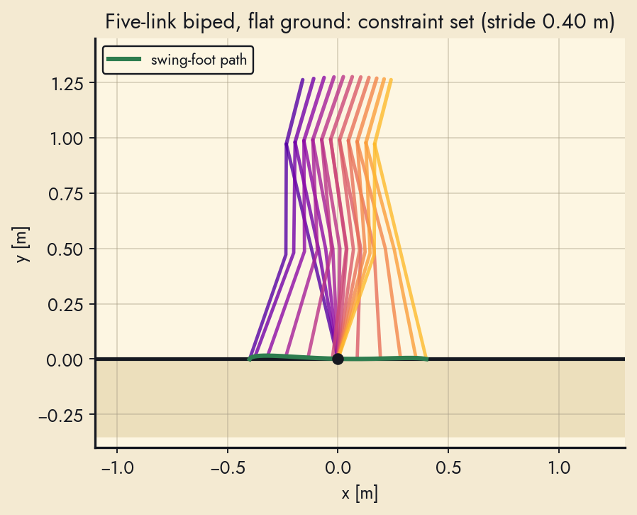
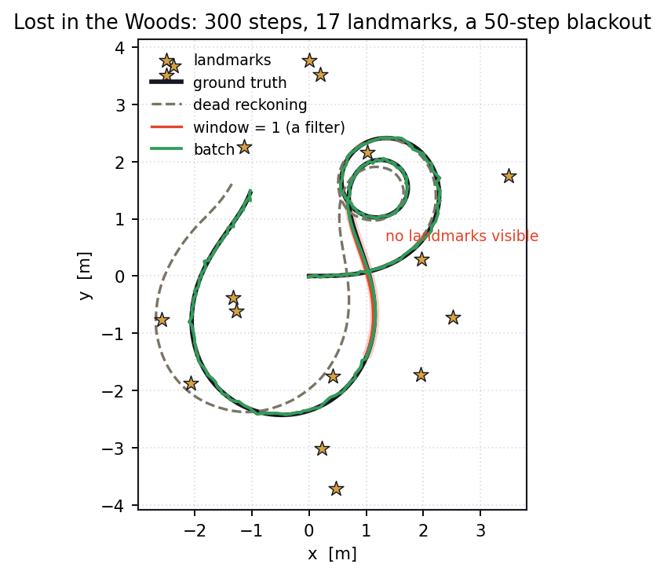

Open-source (MIT) whole-body robot: a 3-module holonomic swerve base, a 0.635 m lift with actuated torso, two 7-DOF arms, two 17-DOF ORCA hands, and a 3-DOF active head. 56 DOF from $8,722, with no machine shop. Teleoperated from Apple Vision Pro, iPhone, browser, or gamepad; full MuJoCo digital twin; demonstration-to-policy pipeline (ACT, Diffusion Policy, π0) deployed onboard. System paper under review.

Apple Vision Pro demonstrations retargeted onto a 23-DoF xArm + ORCA hand by a bifurcated SE(3) optimisation, then cloned by a chunked transformer with a grasp-weighted loss. State Bottlenecking — a mandatory home pose between sub-tasks — takes two-object clearing from 22 % to 88 %. The page lets you switch each term of the retargeting cost off and watch the pinch geometry come apart.

6-DoF variable-mass lunar lander in MuJoCo with a 2-DoF gimbaled engine. A SAC policy learns guidance and control as one map; a cascaded PD baseline, re-run for 500 descents, lands 70.2 % of the time and comes apart above 50 m/s entry speed. The page lets you fly the lander and re-run the Monte Carlo in your browser.


Monocular depth pipeline for human-robot walking environments: Metric3D v2 fine-tuned on 16,780 RGB-D stair images, metric reprojection to 3D point clouds, and plane extraction for stair rise and run. Re-run in 2026 on the archived scenes: 1.7 cm rise / 2.5 cm run mean error against a tape measure.

Tabular Q-learning, DQN, PPO and SAC on a cart-pole whose every observation is corrupted by Gaussian noise. A five-seed re-run found the released bin limits collapse cart position into two of eight bins and double the drift, that survival peaks at σ = 0.1 rather than at zero noise, and that a coarse grid beats a fine one fifteen-fold at a fixed budget. The whole tabular experiment runs live in the page.

Monocular stair/obstacle geometry from one image feeds a five-link biped with knees walking by virtual holonomic constraints (hybrid limit cycles, verified against their return maps). From one view of an obstacle the planner schedules the approach and two step-over gaits chained through the impact map. Includes the re-test of the two-link ECE1658 design and an in-browser demo.

Maximum-a-posteriori estimation over every pose at once, on SE(3), with a stereo camera and an IMU — and the sliding window that approximates it. A four-seed re-run found batch is both more accurate and cheaper than a wide window over a whole trajectory, and that a window looks over-confident only when its noise model is wrong. Drag the window size in the page and watch the estimate move.

MATLAB, SolidWorks — Designed a 3D-printed Arduino-based mobile robot in Fusion 360; implemented localization and obstacle-avoidance for maze navigation in MATLAB; commanded the robot via Bluetooth.

512 hand-soldered LEDs driven by nine daisy-chained shift registers over one SPI bus. Only one of the eight layers is ever lit; the cube is an illusion held together by refreshing faster than the eye can follow. The page lets you play 3-D Snake on it and drag the refresh rate down until persistence of vision gives out.

A TurtleBot 2 mapping an unknown 6×6 m room with a Kinect, three bumpers and GMapping, switching between reactive, behaviour and deliberate control. A six-room re-run found the four strategies are separated by less than their own variance, and that the hybrid controller is simultaneously the best and the worst of them. Watch the occupancy grid fill in live, and race all four.